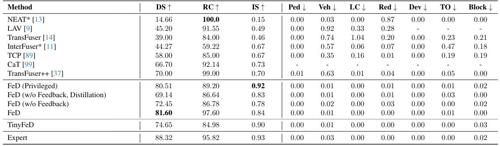
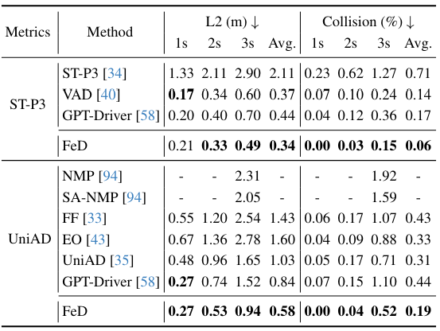

While behavior cloning has recently emerged as a highly successful paradigm for autonomous driving, humans rarely learn to perform complex tasks, such as driving, via imitation or behavior cloning alone. In contrast, learning in humans often involves additional detailed guidance throughout the interactive learning process, i.e., where feedback, often via language, provides detailed information as to which part of their trial was performed incorrectly or suboptimally and why. Motivated by this observation, we introduce an efficient feedback-based framework for improving behavior-cloning-based training of sensorimotor driving agents. Our key insight is to leverage recent advances in Large Language Models (LLMs) to provide corrective fine-grained feedback regarding the underlying reason behind driving prediction failures. Moreover, our introduced network architecture is efficient, enabling the first sensorimotor end-to-end training and evaluation of LLM-based driving models. The resulting agent achieves state-of-the-art performance in open-loop evaluation on nuScenes, outperforming prior state-of-the-art by over 8.1% and 57.1% in accuracy and collision rate, respectively. In CARLA, our camera-based agent improves by 16.6% in driving score over prior LIDAR-based approaches.
Currently, the most common paradigm for training autonomous driving systems relies primarily on learning from expert demonstrations, e.g., via behavior cloning. While this has fueled impressive improvements, these systems still fail to generalize to a wide range of novel scenarios. We believe a possible reason could be the lack of feedback explaining why a certain action policy fails. Rich feedback from a teacher can be beneficial to learning the cause of a control failure in an out-of-domain scenario.
Our proposed FeD is the first sensorimotor end-to-end LLMbased autonomous driving model. FeD enables efficient closed-loop evaluation compared with the existing LLMbased methods, which often leverage slow and costly inference. Our goal is to train a sensorimotor agent to map front camera images (orange) and ego vehicle state information (blue) encoded as language tokens, and predict a set of future waypoints. This is accomplished by introducing new waypoint tokens (green) as part of the input prompt. Our introduced tokens also enable us to leverage the rich output embeddings from the LLM for the prompt to perform direction waypoint prediction, i.e., as opposed to slow and inefficient sequentialgeneration. Our training is done in two stages. First, to ease the challenging sensorimotor learning task, we introduce a privileged agent that additionally takes ground truth environmental information (purple) and provides rich supervision for training the sensorimotor agent through feature distillation. Subsequently, the sensorimotor agent is fine-tuned with prompt-based feedback to enable efficient failure reasoning, i.e., effective reflection on its own mistakes.
Quantitative Evaluation in CARLA
Open-Loop Evaluation on nuScenes
@inproceedings{zhang2023coaching,
title={Feedback-Guided Autonomous Driving},
author={Zhang, Jimuyang and Huang, Zanming and Ray, Arijit and Ohn-Bar, Eshed},
booktitle={CVPR},
year={2024}
}